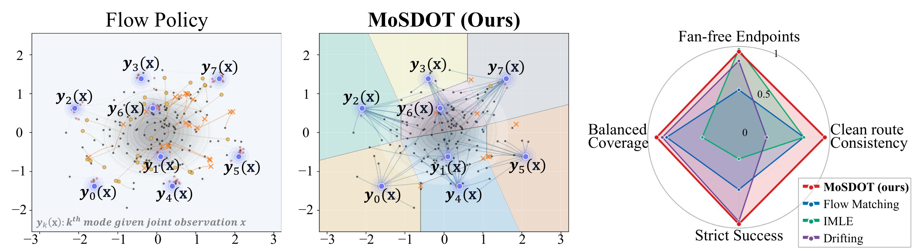
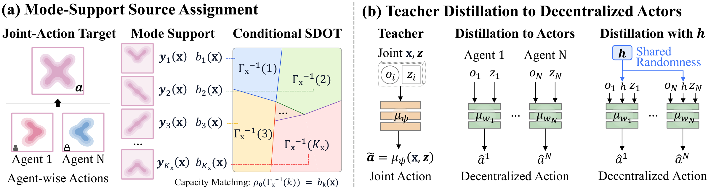
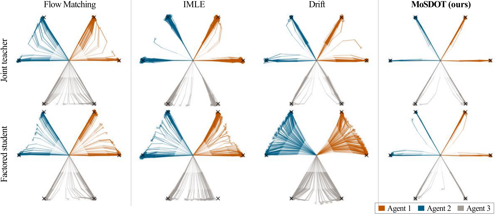
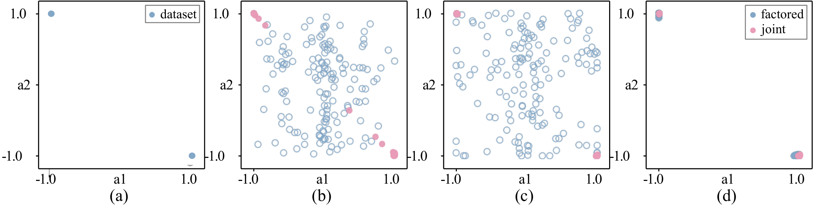
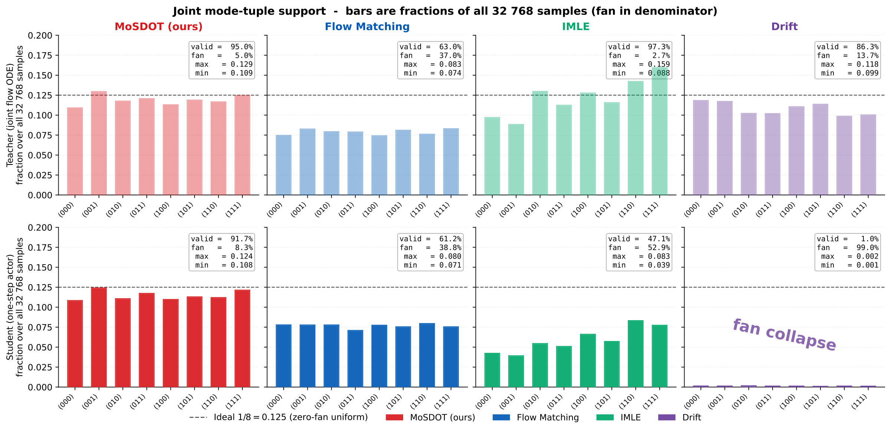

Build mode support
Summarize replay into representative joint actions yk(x), using identity support or joint-action quantization.
Accepted to NeurIPS 2026
MoSDOT
Better coordination starts with a better teacher.
Align source noise with joint-action modes, then distill into local one-step policies.

Give every noise sample a coordinated destination. MoSDOT assigns source regions to replay-derived modes before teacher training, reducing off-support mass and improving routing consistency.
01 / The idea
A centralized teacher can reach valid joint-action modes yet still assign nearby noise samples to conflicting behaviors. Local actors can inherit these artifacts during distillation, producing actions between valid modes.
MoSDOT organizes the source-to-mode assignment first. Capacity-matched transport gives the teacher cleaner targets and preserves more of the support that decentralized actors can recover.
A clean teacher does not remove the strict-product gap: independent local policies cannot represent every correlated joint distribution. We study shared randomness separately.
Landmark means over 4 seeds (Table 1). Benchmark averages as reported in Tables 2–3; benchmark evaluation uses 6 seeds.
02 / The method
A structured source assignment before teacher training.
One-step local actors at execution.

The MoSDOT framework. Transport operates on coordinated joint-action modes. Each distilled actor uses its own observation and noise; the shared-randomness variant additionally supplies a common signal h.
Summarize replay into representative joint actions yk(x), using identity support or joint-action quantization.
Assign each mode a target source mass bk(x) from its empirical replay frequency.
Partition source noise into capacity-matched Laguerre cells, each assigned to one joint-action mode.
Train the teacher on aligned paths and distill its joint actions into decentralized one-step policies.
03 / Benchmark results
Strong gains on diverse continuous replay, with results that vary by discrete-action regime. Explore every baseline and dataset below.
Continuous actions · four dataset qualities
| Method | Expert ↑ | Medium ↑ | Medium-Replay ↑ | Random ↑ | Average ↑ |
|---|---|---|---|---|---|
| MATD3BC | 108.3 ± 3.3 | 29.3 ± 4.8 | 15.4 ± 5.6 | 9.8 ± 4.9 | 40.7 |
| MACQL | 98.2 ± 5.2 | 34.1 ± 7.2 | 20.0 ± 8.4 | 24.0 ± 9.8 | 44.1 |
| ICQ | 114.9 ± 2.6 | 47.9 ± 18.9 | 37.9 ± 12.3 | 34.4 ± 5.3 | 58.8 |
| OMAR | 104.0 ± 3.4 | 29.3 ± 5.5 | 13.6 ± 5.7 | 6.3 ± 3.5 | 38.3 |
| OMIGA | 80.8 ± 13.8 | 30.1 ± 16.9 | 5.4 ± 11.0 | −3.8 ± 12.3 | 28.1 |
| MADiff | 95.0 ± 5.3 | 64.9 ± 7.7 | 30.3 ± 2.5 | 6.9 ± 3.1 | 49.2 |
| MAC-Flow | 101.7 ± 10.9 | 80.1 ± 20.6 | 50.4 ± 33.2 | 31.1 ± 6.8 | 65.8 |
| MoSDOT Ours | 104.40 ± 19.66 | 95.97 ± 12.69 | 54.12 ± 15.29 | 75.92 ± 23.81 | 82.6 |
MoSDOT leads on Medium, Medium-Replay, and Random; ICQ has the highest Expert mean.
Five scenarios, three dataset qualities.
| Method | Average ↑ |
|---|---|
| BC | 12.2 |
| MABCQ | 5.5 |
| MACQL | 13.1 |
| Diffusion BC | 13.0 |
| MADiff | 13.8 |
| DoF | 15.6 |
| Flow BC | 13.4 |
| MAC-Flow | 15.6 |
| MoSDOT Ours | 16.7 |
| Method | Good ↑ | Medium ↑ | Poor ↑ |
|---|---|---|---|
| BC | 16.0 ± 1.0 | 8.2 ± 0.8 | 4.4 ± 0.1 |
| MABCQ | 3.7 ± 1.1 | 4.0 ± 1.0 | 3.4 ± 1.0 |
| MACQL | 19.1 ± 0.1 | 13.7 ± 0.3 | 4.2 ± 0.1 |
| Diffusion BC | 19.5 ± 0.5 | 13.3 ± 0.7 | 4.2 ± 0.2 |
| MADiff | 19.3 ± 0.5 | 16.4 ± 2.6 | 10.3 ± 6.1 |
| DoF | 19.8 ± 0.2 | 18.6 ± 1.2 | 10.9 ± 1.1 |
| Flow BC | 20.0 ± 0.0 | 14.7 ± 1.5 | 4.5 ± 0.1 |
| MAC-Flow | 19.8 ± 0.2 | 18.0 ± 3.2 | 10.6 ± 2.2 |
| MoSDOT Ours | 20.0 ± 0.0 | 18.8 ± 1.5 | 16.4 ± 4.9 |
| Method | Good ↑ | Medium ↑ | Poor ↑ |
|---|---|---|---|
| BC | 16.7 ± 0.4 | 10.7 ± 0.5 | 5.3 ± 0.1 |
| MABCQ | 4.8 ± 0.6 | 5.6 ± 0.6 | 3.6 ± 0.8 |
| MACQL | 18.9 ± 0.9 | 15.5 ± 1.5 | 7.5 ± 1.0 |
| Diffusion BC | 19.4 ± 0.5 | 18.6 ± 0.6 | 4.8 ± 0.2 |
| MADiff | 18.9 ± 1.1 | 16.8 ± 1.6 | 9.8 ± 0.9 |
| DoF | 19.6 ± 0.3 | 18.6 ± 0.8 | 12.0 ± 1.2 |
| Flow BC | 19.5 ± 0.2 | 18.2 ± 0.8 | 4.9 ± 0.1 |
| MAC-Flow | 19.7 ± 0.3 | 19.4 ± 0.6 | 11.5 ± 0.8 |
| MoSDOT Ours | 20.0 ± 0.0 | 20.0 ± 0.0 | 10.8 ± 0.8 |
| Method | Good ↑ | Medium ↑ | Poor ↑ |
|---|---|---|---|
| BC | 18.2 ± 0.4 | 12.3 ± 0.7 | 6.7 ± 0.3 |
| MABCQ | 7.7 ± 0.9 | 7.6 ± 0.7 | 6.6 ± 0.2 |
| MACQL | 17.4 ± 0.3 | 15.6 ± 0.4 | 8.4 ± 0.8 |
| Diffusion BC | 18.0 ± 1.0 | 13.4 ± 1.4 | 6.2 ± 1.2 |
| MADiff | 15.9 ± 1.2 | 15.6 ± 0.3 | 8.5 ± 1.3 |
| DoF | 18.5 ± 0.8 | 18.1 ± 0.9 | 10.0 ± 1.1 |
| Flow BC | 19.5 ± 0.1 | 15.1 ± 2.0 | 6.9 ± 0.8 |
| MAC-Flow | 19.5 ± 0.5 | 17.6 ± 0.6 | 8.5 ± 0.6 |
| MoSDOT Ours | 20.1 ± 0.1 | 18.2 ± 1.0 | 9.4 ± 0.8 |
| Method | Good ↑ | Medium ↑ | Poor ↑ |
|---|---|---|---|
| BC | 15.8 ± 3.6 | 12.4 ± 0.9 | 7.5 ± 0.2 |
| MABCQ | 2.4 ± 0.4 | 3.8 ± 0.5 | 3.3 ± 0.5 |
| MACQL | 16.2 ± 1.6 | 15.1 ± 2.9 | 10.5 ± 3.1 |
| Diffusion BC | 16.8 ± 2.3 | 12.5 ± 2.1 | 8.0 ± 1.0 |
| MADiff | 16.5 ± 2.8 | 15.2 ± 2.6 | 8.9 ± 1.3 |
| DoF | 17.7 ± 1.1 | 16.2 ± 0.9 | 10.8 ± 0.3 |
| Flow BC | 14.7 ± 2.1 | 12.8 ± 0.8 | 7.7 ± 0.8 |
| MAC-Flow | 18.6 ± 3.5 | 15.6 ± 1.3 | 9.8 ± 2.1 |
| MoSDOT Ours | 18.5 ± 1.9 | 17.9 ± 1.2 | 12.3 ± 0.9 |
| Method | Good ↑ | Medium ↑ | Poor ↑ |
|---|---|---|---|
| BC | 17.5 ± 0.4 | 12.5 ± 0.3 | 9.7 ± 0.2 |
| MABCQ | 10.1 ± 0.2 | 9.9 ± 0.2 | 9.0 ± 0.2 |
| MACQL | 12.9 ± 0.2 | 11.6 ± 0.1 | 10.2 ± 0.1 |
| Diffusion BC | 17.8 ± 1.3 | 10.5 ± 1.1 | 10.2 ± 2.3 |
| MADiff | 14.7 ± 2.2 | 12.8 ± 1.2 | 10.8 ± 1.1 |
| DoF | 16.1 ± 0.8 | 13.9 ± 0.9 | 11.5 ± 1.1 |
| Flow BC | 18.0 ± 1.3 | 11.8 ± 2.6 | 10.0 ± 0.3 |
| MAC-Flow | 19.1 ± 0.8 | 14.9 ± 4.1 | 11.4 ± 0.4 |
| MoSDOT Ours | 20.2 ± 0.6 | 16.4 ± 1.0 | 11.4 ± 1.4 |
Reported average reward: MoSDOT 16.7; MAC-Flow and DoF 15.6. Select a scenario to inspect all means and uncertainties.
Discrete actions · replay datasets
| Method | terran_ | zerg_ | terran_ | Average ↑ |
|---|---|---|---|---|
| BC | 7.3 ± 1.0 | 6.8 ± 0.6 | 7.4 ± 0.5 | 7.2 |
| MABCQ | 13.8 ± 4.4 | 10.3 ± 1.2 | 12.7 ± 2.0 | 12.3 |
| MACQL | 11.8 ± 0.9 | 10.3 ± 3.4 | 11.8 ± 2.0 | 11.3 |
| Diffusion BC | 9.3 ± 0.9 | 8.1 ± 1.7 | 5.5 ± 1.5 | 7.6 |
| MADiff | 13.3 ± 1.8 | 10.2 ± 1.1 | 13.8 ± 1.3 | 12.4 |
| DoF | 15.4 ± 1.3 | 12.0 ± 1.1 | 14.6 ± 1.1 | 14.0 |
| Flow BC | 8.3 ± 1.9 | 4.6 ± 0.5 | 5.8 ± 1.7 | 6.2 |
| MAC-Flow | 16.6 ± 4.3 | 9.8 ± 1.5 | 13.0 ± 4.7 | 13.1 |
| MoSDOT Ours | 16.6 ± 4.3 | 9.7 ± 2.8 | 9.4 ± 2.6 | 11.9 |
DoF has the highest reported average (14.0), followed by MAC-Flow (13.1); MoSDOT reports 11.9.
Mean ± 2σ · 6 seeds · higher is better
Bold best mean Underlined second-best mean · ties included
Tables 2–3 in the paper. Average columns reproduce the reported values without recalculation. Download table data Swipe tables horizontally to see all columns.
04 / Looking closer
Controlled diagnostics separate teacher routing quality from the limits of independent local execution.
MoSDOT reduces fan mass between modes and retains the teacher’s ray structure after distillation.

Teacher → student. Top: centralized teacher rollouts. Bottom: one-step factorized students with independent local noise. Black crosses mark the six anchor mode endpoints.
Joint-teacher landmark diagnostics · Table 1 · mean over 4 seeds
| Method | Fan-free ↑ | Route consistency ↑ | Success ↑ | Balance ↑ |
|---|---|---|---|---|
| Flow matching | 0.857 | 0.856 | 0.915 | 0.917 |
| IMLE | 0.991 | 0.857 | 0.848 | 0.761 |
| Drifting | 0.952 | 0.653 | 0.985 | 0.936 |
| MoSDOT Ours | 0.983 | 0.972 | 0.991 | 0.961 |
IMLE has the highest fan-free score. MoSDOT has the highest route consistency, success, and balance. Bold marks the best mean; underlining marks the second-best.
On XOR, independent local sampling cannot preserve the correlated target support. A shared mode-selection signal lets local actors coordinate.

Isolating the strict-product gap. (a) Target support. (b) MAC-Flow. (c) MoSDOT without a shared signal. (d) MoSDOT with a shared signal. Blue: factored student; pink: joint teacher.

Joint mode-tuple support before and after distillation. The original appendix figure reports fractions over 32,768 samples.
05 / Reference
Accepted to NeurIPS 2026.
Sangmin Lee, Youngju Na, Chanmi Lee, and Sung-eui Yoon · KAIST.
@inproceedings{lee2026mosdot,
title = {Multi-Agent Coordination via
Support-Preserving Distillation},
author = {Sangmin Lee and Youngju Na and
Chanmi Lee and Sung-eui Yoon},
booktitle = {Advances in Neural Information
Processing Systems},
year = {2026}
}